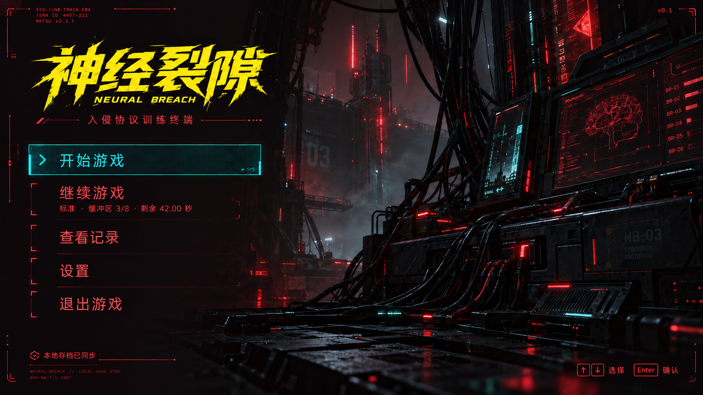

M 播放 / 静音
01 / 主菜单选择一个事件，预览瞬间的彩色故障效果。
这是视听设计样片，图片内按钮不执行游戏操作。音乐由浏览器实时合成，用于确认氛围，不是最终游戏配乐。默认静音；切出页面会停止音乐；故障事件有 1.5 秒间隔。减少动态效果会禁用闪烁。
界面 · 故障动效 · 原创合成器氛围
规则与设计文档 真实字体实样
这是视听设计样片，图片内按钮不执行游戏操作。音乐由浏览器实时合成，用于确认氛围，不是最终游戏配乐。默认静音；切出页面会停止音乐；故障事件有 1.5 秒间隔。减少动态效果会禁用闪烁。